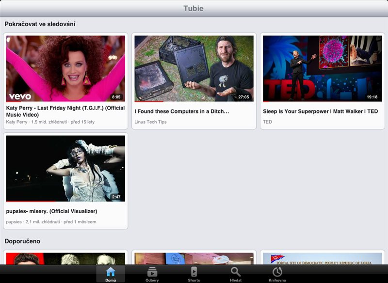
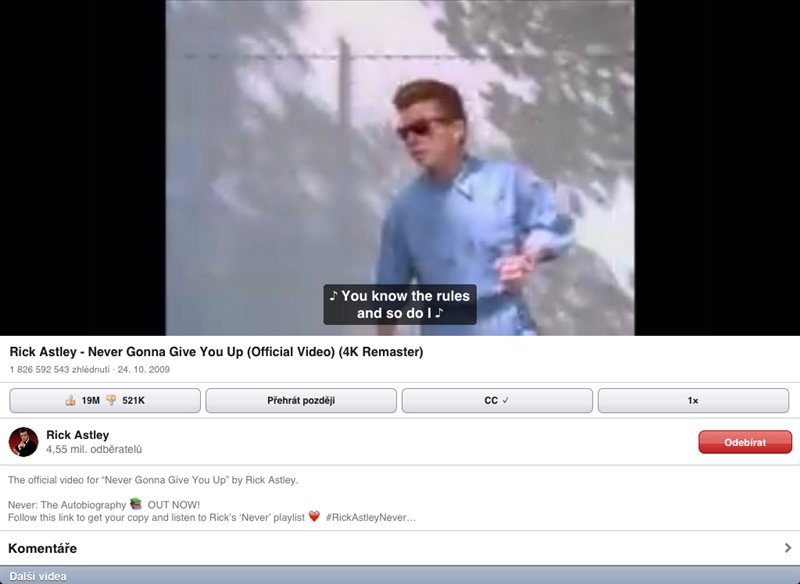
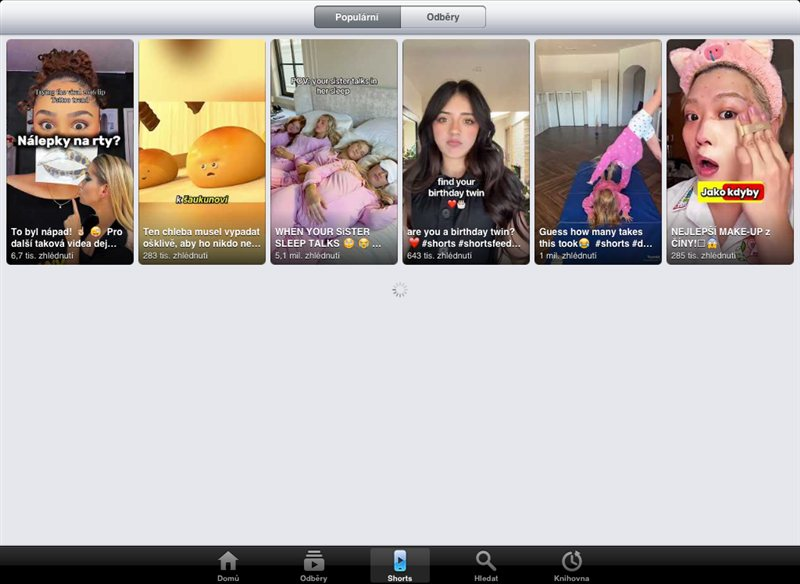
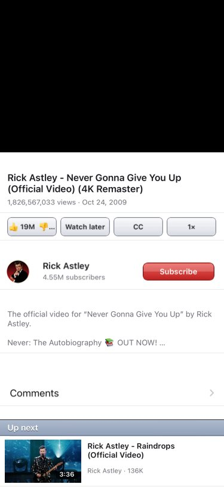

Tubie
YouTube: videos, shorts, live streams, channels, comments
YouTube: videos, shorts, live streams, channels, comments
Tubie combines YouTube videos, Shorts, live broadcasts, playlists and local subscriptions with a classic iOS 6 player. Its built-in Studio adds read-only channel and per-video analytics, period comparisons and CSV export through the existing Google sign-in. Playback format availability and individual reports still depend on YouTube.




Unofficial apps by samcejko, not affiliated with or endorsed by Twitch, Google, Apple, TikTok, Instagram, Meta, Spotify, Kick, NVIDIA, Mojang, Microsoft, OpenRouter, Vine, X, diVine or the Moonlight, Sunshine and Apollo projects.